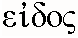
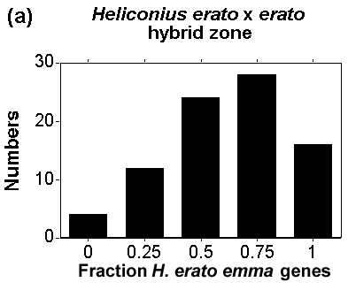
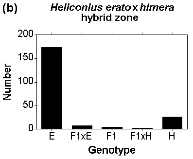
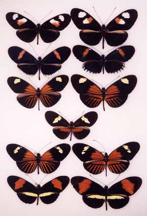

(Note, this is a preprint of an article published with some editorial changes in 1998 in Calow, P. (ed.) Encyclopaedia of Ecology and Environmental Management. Blackwell Press. pp. 709-711)species concepts The concepts, or ideas, that underlie what biologists mean by the term species. Evolution produces diversity at many levels, from genes, races, species, to genera and higher taxa. There are many problems in classifying this diversity, especially with regard to the level in the evolutionary hierarchy in which to place a particular taxon. The species has often been held in special regard as the only "real" taxon. However, there are an extraordinary number of different concepts, ideas and definitions of organic species; only a few can be summarized here.
The ancient philosophical terms genus and species were used in logic to classify objects and ideas as well as living organisms. The species was a collection of objects that had a common underlying "essence"; in fact the Greek term for species and essence were the same (). The genus was a group of such species, with its own, broader essence. For biological organisms, this essentialism fitted well with the biblical story of creation, and Linnaeus adopted this essentialist view of classification in his ambitious project to catalogue every organism known at the time (18th Century). Linnaeus pioneered the use of binomial nomenclature, Latin scientific names which serve as a shorthand for descriptions of species. As an example, the scientific name of the yellow-shafted flicker (a woodpecker) is Colaptes auratus, where Colaptes is the generic and auratus the specific epithet.
The rise of evolutionary ideas meant that the old creationist essentialism was no longer tenable. Charles Darwin was interested in showing that species evolved, but to do so he obviously had to develop a species concept which depended neither on creation nor on evolution. If they evolved, varieties and species could be continuous in space and time. Thus Darwin wrote: "hereafter, we shall be compelled to acknowledge that the only distinction between species and well-marked varieties is, that the latter are known, or believed, to be connected at the present day by intermediate gradations, whereas species were formerly thus connected." To Darwin, the origin of species became the origin of the morphological gaps between populations. This species concept has been called the morphological species concept, although it emphasizes the clustering of members of the same species in morphological space, rather than the fact that morphological characters were used in its implementation.
As the geographic representation of well-organized museum collections increased, a major revolution in this Darwinian species concept began to take place (1890-1920). It was shown that some apparently good species of birds and butterflies blended together in areas of overlap or hybrid zones. Related forms that hybridize and replace each other geographically became downgraded to subspecies and were referred to by a novel extension of the Linnaean system, which now could consist of a trinomial: genus-species-subspecies. For example, the red shafted flicker (formerly Colaptes cafer) is now usually referred to as Colaptes auratus cafer, or the red-shafted race of the common flicker. This species also includes the yellow-shafted flicker, C. auratus auratus. Species with more than one subspecies became known as polytypic species. At the same time, other, more trivial forms or varieties within local populations became excluded from the formal Linnaean taxonomy.
In the 1930s and 1940s, evolutionists became dissatisfied with the Linnaean/Darwinian character-based definitions of species; they felt that species designations could reflect a real underlying biological phenomenon rather than remaining merely as categories for taxonomic convenience, and they wished to formalize this reality by specifying their idea of the important biological process. Drawing on ideas from Buffon and other early biologists, EB Poulton, T Dobzhansky and E Mayr proposed what is now known as the biological species concept, in which species are thought of as populations which do not interbreed, and are therefore reproductively isolated from other species. These ideas were developed along with (though do not necessarily require) the idea that species were important units of evolution, and that isolating mechanisms were protective devices to maintain the genetic integrity of the species.
The biological species concept seems to have been largely accepted by zoologists for about 30 years. On the other hand, botanists never fully accepted the idea because plants often had high rates of hybridization, local variability, and environmentally-induced plasticity. In recent years, however, any semblance of agreement about species concepts, even among zoologists, has been shattered. An explosion of new ideas has occurred. One movement, spearheaded by PR Ehrlich and PH Raven has claimed that populations, rather than species, are the important and real biological units of evolution. Others claim that biological processes do underlie species, but each has supported a different type of process as the important one. Examples include L Van Valen's ecological species concept, in which species are defined by their ecological niches, and HEH Paterson's recognition concept of species, in which species are defined by sexual signalling or specific mate recognition systems within species (see also isolating mechanisms). The cohesion concept of species was proposed by A Templeton to combine reproductive isolation, ecological selection, and reproductive compatibility within a single species concept. The major advantage of this idea was that both hybridizing and asexual species which, which could not be classified under the biological species concept, could be included.
A completely different approach to species concepts has been to include the idea of evolutionary history as opposed to merely the maintenance of current species. The evolutionary species concept, in which a species is a lineage evolving separately from others, was proposed by GG Simpson to allow fossils to be classified as species as well as living organisms. This idea has been formalized recently in various types of phylogenetic species concept, in which the individuals that belong to a species contain all the descendents of a single population of ancestors, that is they are monophyletic. This group of ideas was developed by J Cracraft and others specifically in response to an increase in the use of cladistics in classification. In cladistics, only apomorphies (uniquely derived traits) are used to unite groups; reproductive compatibility and free hybridization supposedly cannot be used in species definitions because they are primitive or plesiomorphic traits. Unfortunately, hybridization may also allow genes to pass from one taxon to another, and so different genes within groups of organisms may in fact have different phylogenies (phylogenies of single genes are called genealogies). To get around this problem of conflicting data, DL Baum and KL Shaw have suggested a variant phylogenetic species concept based on the consensus of many estimated genealogies of different genes; this is called the genealogical species concept. Finally, A Templeton has recently added phylogenetic and genealogical considerations, as well as ecology and reproductive isolation, to his cohesion concept of species.

Fig 1. Genotypic cluster diagnosis of species and races in areas of overlap. The frequency of genotypes in two hybrid zones involving Heliconius erato (pure forms are illustrated in Fig. 2). (a) The numbers of individuals with different proportions of colour pattern genes from H. erato emma in the centre of a hybrid zone between H. e. favorinus and H. e. emma near Pongo de Cainarache, San Martin, Peru. (b) The numbers of individuals from one site in a hybrid zone between H. erato (E) and H. himera (H) plotted against the genotypic class to which they belong; pure, first generation hybrids (F1) or backcrosses (F1xE, F1xH). In (a), the forms are considered members of the same species because we can distinguish only one peak or cluster in the genotype distribution. In (b), two genotypic clusters are distinguishable, which are considered separate species.
Most recent species concepts (Ehrlich & Raven's population concept
is an exception) attempt to identify the underlying biological "reality"
of species, and are therefore, to some extent, modern examples of essentialist
thought. From Mayr onwards, there has been a deliberate attempt to exclude
any consideration of usefulness of the term species from the discussions
about species concepts. This may be a mistake. The debate can be resolved
if we explicitly avoid using evolutionary history or the biological means
by which the integrity of a species is maintained, and instead strive for
a definition of species which is useful in taxonomy, evolutionary studies,
and conservation. Given that we now have abundant genetic data, we could
use a genetic version of Darwin's morphological cluster concept,
called by J Mallet the genotypic cluster definition. Genotypic
clusters can be identified by the presence of gaps between groups of
multilocus genotypes within a local area (Fig. 1), in the same way that
Darwin's morphological cluster species are identified by
morphological gaps; indeed morphology is often a good clue to genotype.
The genotypic cluster definition reverts back to the taxonomic practice
inherent in the polytypic species (in which races are judged conspecific
by means of abundant intermediates in hybrid zones). Genotypic cluster
species are indeed very similar to the practical taxonomic application
of the
biological species concept. It is of course likely that genotypic
cluster species will be maintained as distinct entities from one another
because of reproductive or ecological traits, and that they will achieve
evolutionary, phylogenetic, and genealogical separation through time. But
genotypic clusters may violate one or more of these biological or evolutionary
principles and yet remain distinct (Fig 1). The genotypic cluster definition
is therefore related to the cohesion concept in that it allows for
multiple means of cluster maintenance and evolution, but, instead of arbitrating
between every possible process of cohesion, it merely examines the genetic
results of the combination of processes. Species as genotypic clusters
are easier to use in taxonomy, and in conservation, and in the investigation
of speciation (the evolution of genotypic gaps that do not dissolve in
sympatry) than species based on idealized evolutionary or biological concepts,
because studies of biological and evolutionary processes are not required
before the work starts. See the example in Fig. 2.

Fig. 2. Species and subspecies of mimetic butterflies. Warningly coloured Heliconius butterflies, showing local Mullerian mimicry and geographic differences between subspecies and species. Heliconius erato is shown in the left-hand column, H. melpomene on the right. Each row is an example of a local mimicry ring of these species from a different area of Ecuador or northern Peru. The different geographic forms within each column are considered subspecies, because there are abundant intermediates where they meet in hybrid zones (see Fig. 1a). The only exception is H. himera (fourth row), a form closely related to H. erato, and which it replaces in dry valleys in the border region of southern Ecuador and northern Peru where H. melpomene is generally absent. Heliconius himera is considered a separate species because hybrids between himera and erato, known from contact zones with three separate subspecies of H. erato, are much rarer than pure forms (see Fig. 1b).
The profusion of species concepts in the biological literature is
currently a major hindrance to the study of biological diversity, and its
use in conservation and evolutionary investigations. And yet, biologists
no longer argue about "cell concepts", or "gene concepts", presumably because
the concepts of cells as units of tissue, and DNA as the genetic material,
are now broadly understood. We continue to disagree about species concepts
because we do not yet understand species very well; at the same time, we
need to make decisions because species themselves are going extinct at
an accelerating rate. These arguments may exist because we are asking the
wrong questions (perhaps species do not really exist?), but more probably
because we still have much to learn about species. In any case, it is to
be hoped that a generally applicable and useful idea of species will soon
put an end to the current chaos. Darwin's concept may still be the that
best and most useful solution.
J.L.B.M. (J L B Mallet)
Berlocher S & Howard D (eds). (1997) Endless Forms: Species and
Speciation. Oxford University Press, New York.
Mallet J. (1995) A species definition for the Modern Synthesis. Trends
Ecol. Evol. 10, 294-299.
Mayr E. (1982) The Growth of Biological Thought. Diversity, Evolution,
and Inheritance. Belknap, Cambridge, Mass.